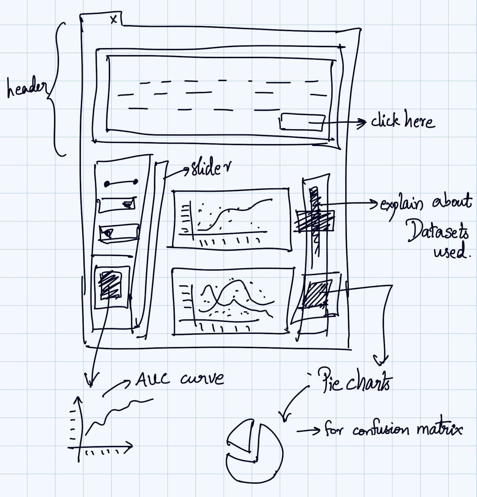

Machine Learning Algorithms Visualisation
Prototype of my Work
Data Visualisation is an iterative design process

Early mockup of Visualisation
A Playground of Interactive Visualisations With the Interactive data visualization used which is used in Visualiser enables users to directly manipulate and explore graphical representations of data. Data visualization uses visual aids to help analysts efficiently and effectively understand the significance of data. Interactive data visualization software improves upon this concept by incorporating interaction tools that facilitate the modification of the parameters of a data visualization, enabling the user to see more detail, create new insights, generate compelling questions, and capture the full value of the data.